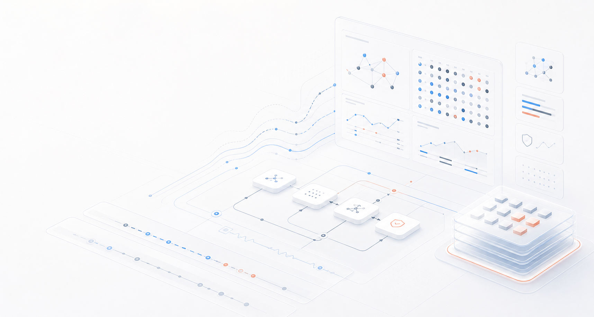

01Trace layer
Trajectory capture
Record prompts, tool calls, file changes, outputs, and intermediate states so every agent result has a readable execution trail.

Traceable evaluation infrastructure for AI agents. Capture real trajectories, replay failures, and turn benchmark runs into evidence your team can inspect.
TraceLite.ai is built around reproducible runs: the task, the tools, the agent actions, the final artifact, and the verifier all stay connected.
Record prompts, tool calls, file changes, outputs, and intermediate states so every agent result has a readable execution trail.
Pass rates are too flat on their own. A useful evaluation system should explain what happened, where the run diverged, and whether the agent satisfied the real contract of the task.
Tool calls, hidden assumptions, environment state, and final artifacts belong in the same evidence record.
A discriminative case catches semantic mistakes even when the agent exits cleanly and produces a plausible-looking result.
Tasks, harness configuration, scoring logic, and expected evidence should be portable enough for independent reproduction.
The site is static, but the product story is concrete: agents enter a harness, traces are captured, verifiers judge the result, and failures become reusable cases.
Fix the task state, tool surface, and expected contract before measuring behavior.
Keep the reasoning-adjacent evidence that matters: calls, outputs, files, and final deliverables.
Judge correctness against the task contract rather than relying on whether the run looked smooth.
Convert real bad runs into reusable tests for regression, model comparison, and harness design.
Use the repository as the public home for TraceLite.ai while the benchmark cases and runtime pieces mature.